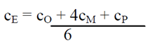

<div class="main-content">
    <div class="container-fluid">
        <div class="card">
            <div class="card-header card-header-info gray">
                <h3 class="card-title">Módulo 1: Gestión de los costos</h3>
                <!-- <p class="card-category">Created using Roboto Font Family</p> -->
            </div>
            <div class="card-body">
                <div id="typography">
                    <div class="card-title">
                        <h2>Estimar los costos del proyecto</h2>
                        <div class="container">
                            <p class="justify-content">
                                El proceso Estimar los Costos, consiste en realizar una aproximación de los recursos
                                monetarios necesarios para completar las actividades del proyecto. La exactitud de la
                                estimación del costo de un proyecto, aumenta según avanza el proyecto, de manera que es
                                un proceso iterativo. Los costos se estiman para todos los recursos asignados al
                                proyecto, es decir, recursos de trabajo, recursos materiales, coste de servicios e
                                instalaciones y posibles costes por contingencias.
                            </p>
                            <p class="justify-content">
                                La estimación de los costes de las actividades puede necesitar de los resultados de los
                                procesos de planificación de otras áreas como por ejemplo el cronograma del proyecto, el
                                registro de riesgos y las asignaciones de personal. Debido a ello las estimaciones no
                                pueden darse por definitivas hasta contar con tales informaciones. Si la organización
                                ejecutante no posee estimadores de costes formalmente formados, el equipo del proyecto
                                deberá aportar los recursos y la experiencia necesarios para llevar a cabo la estimación
                                de los costes del proyecto
                            </p>
                            <p class="justify-content">
                                Por lo tanto, podemos definir la estimación de costos, como una evaluación cuantitativa
                                de los costos probables de los recursos necesarios para completar las actividades del
                                proyecto.
                            </p>
                        </div>
                        <h3>Entradas</h3>
                        <div class="container">
                            <p class="justify-content">
                                <b>Plan de Gestión de Costes: </b>Dado que detalla los criterios, técnicas,
                                procedimientos y herramientas para estimar los Costes del Proyecto, además de los
                                relativos a los otros procesos de Gestión del coste.
                            </p>
                            <p class="justify-content">
                                <b>Plan de Gestión de los Recursos Humanos: </b>Las características del personal
                                seleccionado para el Proyecto influyen en los Costes de personal, además del sistema de
                                reconocimiento y recompensa, por lo que son componentes necesarios para desarrollar las
                                estimaciones de Costes del cronograma.
                            </p>
                            <p class="justify-content">
                                <b>Línea Base del Alcance: </b> La línea base del alcance puede contener información
                                adicional sobre requisitos con implicaciones contractuales y legales, está relacionada
                                con la salud, la seguridad, el desempeño, el medioambiente, los seguros, los derechos de
                                propiedad intelectual, las licencias y los permisos. Toda esta información debe tomarse
                                en cuenta para la elaboración de las estimaciones de costos.
                            </p>
                            <p class="justify-content">
                                <b>Enunciado del Alcance: </b> Un supuesto que es necesario conocer para estimar los
                                costos del Proyecto, es si los estimados se referirán únicamente a los costes directos
                                (CD) o incluirán también los costes indirectos (CI) del Proyecto. El enunciado del
                                Alcance proporciona información sobre restricciones, límites y supuestos del Proyecto.
                                Una posible restricción podría ser un presupuesto limitado.
                            </p>
                        </div>
                        <h3>EDT</h3>
                        <div class="container">
                            <p class="justify-content">
                                <b>Cronograma del Proyecto: </b> Los costos del Proyecto vienen determinados por el tipo
                                y cantidad de recursos, así como el tiempo que dichos recursos utilizan para completar
                                las actividades del Proyecto.
                            </p>
                            <p class="justify-content">
                                <b>Registro de riesgos: </b> Es importante también, considerar los costos de mitigación
                                de riesgos.
                                Factores ambientales: Condiciones de mercado e información comercial publicada.
                            </p>
                            <p class="justify-content">
                                <b>Activos de los procesos de la Organización: </b> Políticas y plantillas de estimación
                                de costos. Información
                                histórica y lecciones aprendidas.

                            </p>
                        </div>
                        <h2>Herramientas Y técnicas</h2>
                        <div class="container">
                            <p class="justify-content">
                                <b>Juicio de expertos: </b> Junto con la información histórica, el juicio de expertos
                                aporta una perspectiva valiosa sobre el ambiente y la información procedentes de
                                Proyectos similares anteriores. También puede utilizarse para determinar si es
                                conveniente combinar métodos de estimación y cómo conciliar las diferencias entre ellos.
                            </p>
                            <p class="justify-content">
                                <b>Estimación análoga: </b> Utiliza el costo real de Proyectos similares anteriores como
                                base para estimar el costo del proyecto actual, que a veces se ajusta en función de
                                diferencias conocidas en cuanto a la complejidad del Proyecto. Generalmente, es un
                                método menos costo y más rápido que otros, pero, por el contrario, es menos exacto.
                            </p>
                            <p class="justify-content">
                                <b>Estimación paramétrica: </b> Consiste en utilizar información histórica para estimar
                                los costos futuros. Consigue niveles superiores de exactitud.
                            </p>
                            <p class="justify-content">
                                <b>Estimación ascendente: </b> Estimación de los costes de los componentes de trabajo.
                                Se estima el costo de cada paquete de trabajo o actividad, con el mayor grado de detalle
                                posible, de manera que el costo se resume en niveles superiores.
                            </p>
                            <p class="justify-content">
                                <b>Estimación por tres valores: </b> El método PERT utiliza tres estimados para definir
                                un rango aproximado de costo de una actividad:
                            </p>
                            <ul>
                                <li>Más probable (cM)</li>
                                <li>Optimista (cO)</li>
                                <li>Pesimista (cP)</li>
                                <li>Esperada (cE)</li>
                            </ul>
                            <p class="text-center">
                                
                            </p>
                            <p class="justify-content">
                                Las estimaciones de costos basadas en esta ecuación pueden proporcionar una mayor
                                exactitud. Los tres valores aclaran el rango de incertidumbre de las estimaciones de
                                costos.
                                Análisis de reserva: El estimado de costos, puede incluir reservas de costo adicionales
                                para contingencias sobre aquellos eventos previstos, pero inciertos. Puede ser un
                                porcentaje del costo estimado, una cantidad fija, o puede calcularse utilizando métodos
                                de análisis cuantitativos. Según vamos disponiendo de más información sobre el Proyecto,
                                esta reserva puede utilizarse, reducirse o eliminarse. Las reservas para contingencias
                                forman parte de los requisitos de financiamiento. El presupuesto debe incluir estas
                                reservas y pueden ser administradas por el Director de Proyecto (DP) sin solicitar
                                autorización.
                                Costo de la Calidad: Aseguramiento de la Calidad del Proyecto.
                            </p>
                        </div>
                        <h2>Salidas</h2>
                        <div class="container">
                            <p class="justify-content">
                                Estimaciones de costos de las actividades: El trabajo directo de los recursos,
                                materiales, el equipo, servicios, instalaciones, tecnología de la información y
                                categorías especiales. Tales como una asignación por inflación o una reserva para
                                contingencias de costo.
                                Base de las estimaciones: Detalles adicionales que respaldan la estimación de costos.
                                Actualizaciones a los documentos del Proyecto.
                            </p>
                        </div>
                        <h2>Estimación de presupuesto</h2>
                        <div class="container">
                            <p class="justify-content">
                                El gerente del proyecto es responsable de estimar el presupuesto requerido para cumplir
                                las actividades del proyecto. El gerente del proyecto debe asignar todos los costos a
                                las actividades del proyecto, y a todos los aspectos del mismo, incluyendo el costo del
                                recurso humano interno y externo, equipo, viajes, materiales e insumos, todos deben ser
                                incorporados. El presupuesto tiene que ser mucho más detallado y más preciso de lo que
                                fue en la propuesta del proyecto. En el caso que el gerente de proyectos empiece su
                                trabajo con un presupuesto contratado, tendrá que revisar las suposiciones hechas
                                durante la etapa de la propuesta del proyecto y verificar que lo acordado en el alcance
                                pueda ser logrado en el presupuesto del contrato.
                            </p>
                            <table class="table table-hover">
                                <thead class=" text-primary">
                                    <th class="text-center">
                                        Insumos
                                    </th>
                                    <th class="text-center">
                                        Procesos
                                    </th>
                                    <th class="text-center">
                                        Resultados
                                    </th>
                                </thead>
                                <tbody>
                                    <tr>
                                        <td>
                                            <ul>
                                                <li>Estructura de Desglose del Trabajo</li>
                                                <li>Requerimiento de recursos</li>
                                                <li>Estimaciones de costo</li>
                                                <li>Cronograma</li>
                                                <li>Información histórica</li>
                                                <li>Condiciones del mercado</li>
                                                <li>Políticas</li>
                                            </ul>
                                        </td>
                                        <td>
                                            <ul>
                                                <li>Planear-Definir y estimar los requerimientos de recursos y desarrollar el presupuesto</li>
                                                <li>Hacer-Obtener la aprobación, y publicar el presupuesto, autorizar los gastos</li>
                                                <li>Revisar-Control del presupuesto y análisis de la ejecución</li>
                                                <li>Adaptar-actualizar el presupuesto, establecer acciones correctivas</li>
                                            </ul>
                                        </td>  
                                        <td>
                                            <ul>
                                                <li>Lineamientos del presupuesto del proyecto</li>
                                                <li>Reporte de variación del presupuesto</li>
                                                <li>Actualización del presupuesto</li>
                                            </ul>
                                        </td>
                                    </tr>
                                </tbody>
                            </table>
                        </div>
                    </div>
                </div>
            </div>
        </div>
    </div>
</div>